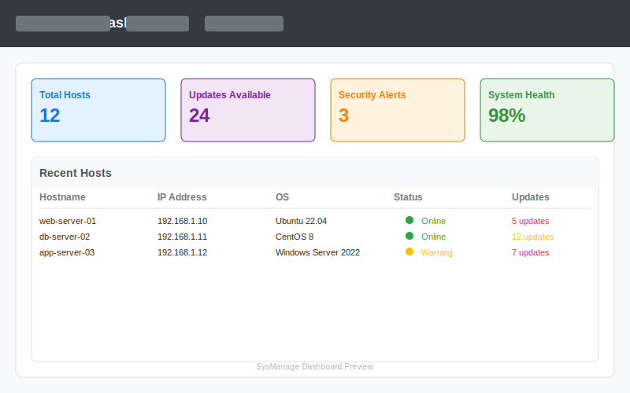
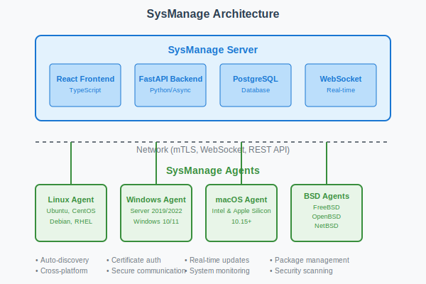

Modern System Management Made Simple
Centralized monitoring, management, and automation for your entire infrastructure. Support for Linux, Windows, macOS, FreeBSD, and OpenBSD.

Key Features
Cross-Platform Support
Manage Linux, Windows, macOS, FreeBSD, and OpenBSD systems from a single interface.
Real-Time Monitoring
WebSocket-based real-time communication for instant system updates and monitoring.
Enterprise Security
JWT authentication, mTLS, role-based access control, and comprehensive security scanning.
Package Management
Remote software installation, updates, and management across all supported platforms.
Multi-Language Support
Native support for 14 languages including English, Spanish, French, German, and more.
Modern Web UI
Responsive React-based interface with real-time dashboards and comprehensive reporting.
Quick Start
Architecture Overview
Server Components
- FastAPI Backend - Python-based REST API with async support
- React Frontend - Modern TypeScript-based web interface
- PostgreSQL Database - Reliable data storage with migration support
- WebSocket Engine - Real-time communication with agents
Agent Features
- Lightweight Design - Minimal resource footprint
- Auto-Discovery - Automatic server detection on the network
- Secure Communication - mTLS and certificate-based authentication
- Cross-Platform - Native support for all major operating systems
